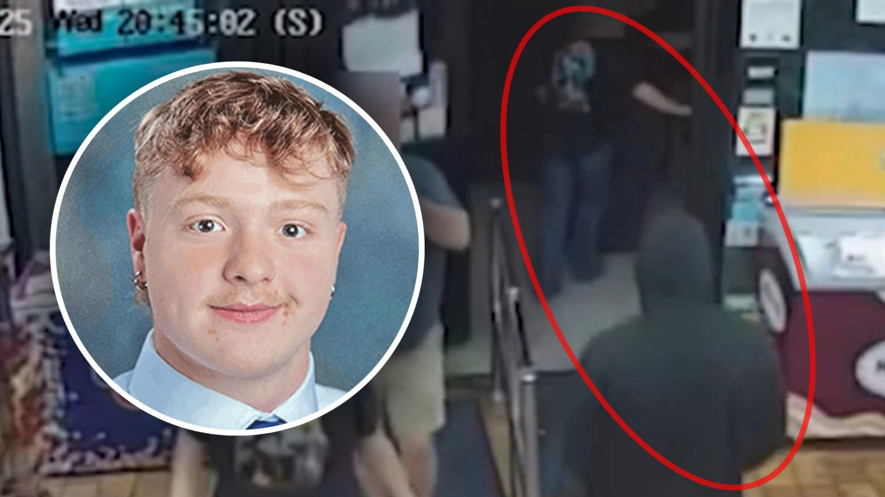
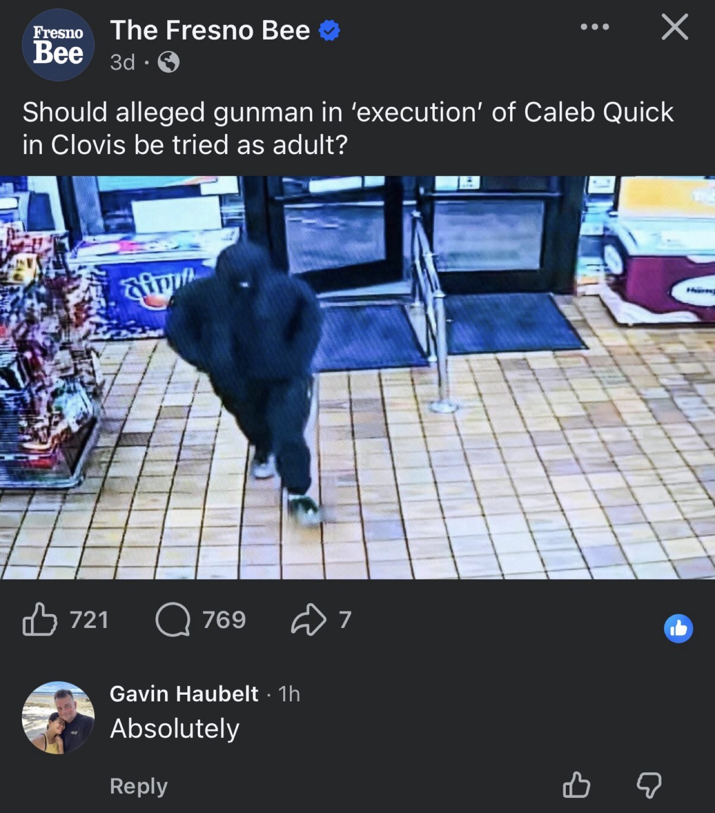
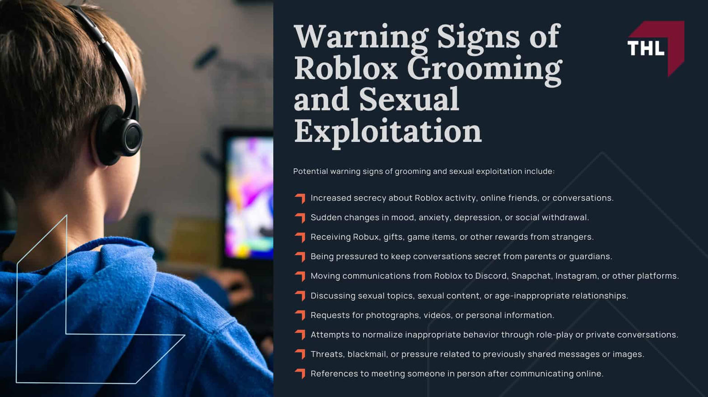
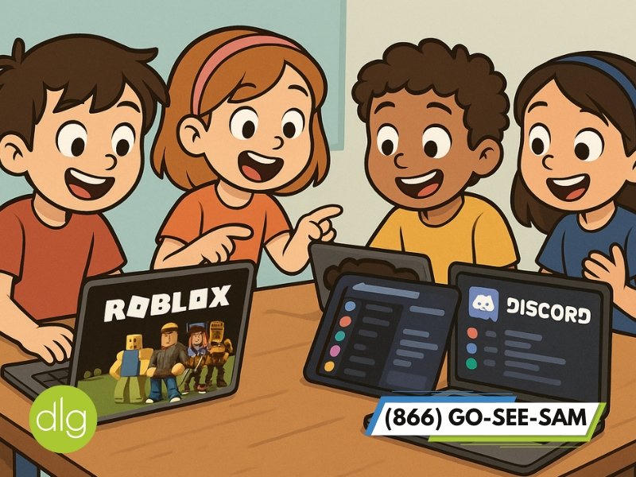

The Act

An 18-year-old was weeks from high school graduation and Air Force training. He was executed in a parking lot that teens used as a hangout.
The alleged shooter was 16. The getaway driver was 16. Both face the question of whether they stay protected as children or face adult consequences.
The Question Being Asked

One local answer was simple: Absolutely.
The Core Argument
Anybody in the position of this alleged gunman, brought into a trial this serious, should not only be tried as an adult by default.
They should have their child status revoked by federal authorities.
New legislation is needed. Children today are learning to be criminally sadistic with tools like Roblox and Discord. Sexual predators groom them to become criminally sadistic just like them.
When these children act out the predatory behaviors they learned, they should immediately lose their child status.
How It Is Learned
These are not spontaneous plans. They are compulsions learned from other predators.


The behaviors are transferred. The compulsion is learned. Then it is acted out in the real world with real guns and real victims.
The Principle
When you lose your innocence, you lose your ability to be protected by the government as a child.
That is basic logic.
Public Safety First
A single child’s protected status cannot outweigh the right of the public to be safe from execution-style killings planned and carried out by minors who have already absorbed predatory patterns.
Federal legislation should make the default clear and swift: serious, learned, predatory violence ends child status.
What Happens Next Locally
Cassandra Michael (getaway driver) was found guilty of first-degree murder in juvenile court. Sentencing set for early September 2026.
Byron Rangel (alleged gunman) has a transfer hearing set for December 1, 2026. A judge will decide whether he stays in the juvenile system or faces adult court.
As a juvenile the maximum is roughly seven years or until age 25. As an adult the exposure is far higher, including possible life without parole.
Closing
This is not about one case alone. It is about the pattern of learned sadism that travels through private digital spaces into parking lots in Clovis and every other community.
The government should not continue to treat as children those who have already chosen to act as predators.
Public safety is more important than a single child.
High Tower District • Fresno / Clovis • August 2026
Sources
- Fresno Bee: “Should alleged gunman in ‘execution’ of Caleb Quick in Clovis be tried as adult?” (Aug 21, 2026)
- Fresno Bee reporting on the April 23, 2025 shooting, arrests, motive allegations, and court proceedings
- ABC30 / KFSN coverage of Cassandra Michael’s first-degree murder finding and Rangel transfer hearing schedule
- Clovis Police Department surveillance releases and public statements
- Public reporting on online grooming risks associated with Roblox and Discord platforms